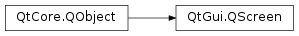

QScreen¶
Synopsis¶
Functions¶
- def
angleBetween(a, b) - def
availableGeometry() - def
availableSize() - def
availableVirtualGeometry() - def
availableVirtualSize() - def
depth() - def
devicePixelRatio() - def
geometry() - def
grabWindow(window[, x=0[, y=0[, w=-1[, h=-1]]]]) - def
isLandscape(orientation) - def
isPortrait(orientation) - def
logicalDotsPerInch() - def
logicalDotsPerInchX() - def
logicalDotsPerInchY() - def
manufacturer() - def
mapBetween(a, b, rect) - def
model() - def
name() - def
nativeOrientation() - def
orientation() - def
orientationUpdateMask() - def
physicalDotsPerInch() - def
physicalDotsPerInchX() - def
physicalDotsPerInchY() - def
physicalSize() - def
primaryOrientation() - def
refreshRate() - def
serialNumber() - def
setOrientationUpdateMask(mask) - def
size() - def
transformBetween(a, b, target) - def
virtualGeometry() - def
virtualSiblings() - def
virtualSize()
Signals¶
- def
availableGeometryChanged(geometry) - def
geometryChanged(geometry) - def
logicalDotsPerInchChanged(dpi) - def
orientationChanged(orientation) - def
physicalDotsPerInchChanged(dpi) - def
physicalSizeChanged(size) - def
primaryOrientationChanged(orientation) - def
refreshRateChanged(refreshRate) - def
virtualGeometryChanged(rect)
Detailed Description¶
The
PySide2.QtGui.QScreenclass is used to query screen properties.A note on logical vs physical dots per inch: physical DPI is based on the actual physical pixel sizes when available, and is useful for print preview and other cases where it’s desirable to know the exact physical dimensions of screen displayed contents.
Logical dots per inch are used to convert font and user interface elements from point sizes to pixel sizes, and might be different from the physical dots per inch. The logical dots per inch are sometimes user-settable in the desktop environment’s settings panel, to let the user globally control UI and font sizes in different applications.
-
PySide2.QtGui.QScreen.angleBetween(a, b)¶ Parameters: - a –
PySide2.QtCore.Qt.ScreenOrientation - b –
PySide2.QtCore.Qt.ScreenOrientation
Return type: PySide2.QtCore.intConvenience function to compute the angle of rotation to get from rotation
ato rotationb.The result will be 0, 90, 180, or 270.
Qt.PrimaryOrientationis interpreted as the screen’sPySide2.QtGui.QScreen.primaryOrientation().- a –
-
PySide2.QtGui.QScreen.availableGeometry()¶ Return type: PySide2.QtCore.QRect
-
PySide2.QtGui.QScreen.availableGeometryChanged(geometry)¶ Parameters: geometry – PySide2.QtCore.QRect
-
PySide2.QtGui.QScreen.availableSize()¶ Return type: PySide2.QtCore.QSize
-
PySide2.QtGui.QScreen.availableVirtualGeometry()¶ Return type: PySide2.QtCore.QRect
-
PySide2.QtGui.QScreen.availableVirtualSize()¶ Return type: PySide2.QtCore.QSize
-
PySide2.QtGui.QScreen.depth()¶ Return type: PySide2.QtCore.int
-
PySide2.QtGui.QScreen.devicePixelRatio()¶ Return type: PySide2.QtCore.qreal
-
PySide2.QtGui.QScreen.geometry()¶ Return type: PySide2.QtCore.QRect
-
PySide2.QtGui.QScreen.geometryChanged(geometry)¶ Parameters: geometry – PySide2.QtCore.QRect
-
PySide2.QtGui.QScreen.grabWindow(window[, x=0[, y=0[, w=-1[, h=-1]]]])¶ Parameters: - window –
PySide2.QtGui.WId - x –
PySide2.QtCore.int - y –
PySide2.QtCore.int - w –
PySide2.QtCore.int - h –
PySide2.QtCore.int
Return type: Creates and returns a pixmap constructed by grabbing the contents of the given
windowrestricted byPySide2.QtCore.QRect(x,y,width,height).The arguments (
x,y) specify the offset in the window, whereas (width,height) specify the area to be copied. Ifwidthis negative, the function copies everything to the right border of the window. Ifheightis negative, the function copies everything to the bottom of the window.The window system identifier (
WId) can be retrieved using theQWidget.winId()function. The rationale for using a window identifier and not aPySide2.QtWidgets.QWidget, is to enable grabbing of windows that are not part of the application, window system frames, and so on.Warning
Grabbing windows that are not part of the application is not supported on systems such as iOS, where sandboxing/security prevents reading pixels of windows not owned by the application.
The function grabs pixels from the screen, not from the window, i.e. if there is another window partially or entirely over the one you grab, you get pixels from the overlying window, too. The mouse cursor is generally not grabbed.
Note on X11 that if the given
windowdoesn’t have the same depth as the root window, and another window partially or entirely obscures the one you grab, you will not get pixels from the overlying window. The contents of the obscured areas in the pixmap will be undefined and uninitialized.On Windows Vista and above grabbing a layered window, which is created by setting the
Qt.WA_TranslucentBackgroundattribute, will not work. Instead grabbing the desktop widget should work.Warning
In general, grabbing an area outside the screen is not safe. This depends on the underlying window system.
- window –
-
PySide2.QtGui.QScreen.isLandscape(orientation)¶ Parameters: orientation – PySide2.QtCore.Qt.ScreenOrientationReturn type: PySide2.QtCore.boolConvenience function that returns
trueifois either landscape or inverted landscape; otherwise returnsfalse.Qt.PrimaryOrientationis interpreted as the screen’sPySide2.QtGui.QScreen.primaryOrientation().
-
PySide2.QtGui.QScreen.isPortrait(orientation)¶ Parameters: orientation – PySide2.QtCore.Qt.ScreenOrientationReturn type: PySide2.QtCore.boolConvenience function that returns
trueifois either portrait or inverted portrait; otherwise returnsfalse.Qt.PrimaryOrientationis interpreted as the screen’sPySide2.QtGui.QScreen.primaryOrientation().
-
PySide2.QtGui.QScreen.logicalDotsPerInch()¶ Return type: PySide2.QtCore.qreal
-
PySide2.QtGui.QScreen.logicalDotsPerInchChanged(dpi)¶ Parameters: dpi – PySide2.QtCore.qreal
-
PySide2.QtGui.QScreen.logicalDotsPerInchX()¶ Return type: PySide2.QtCore.qreal
-
PySide2.QtGui.QScreen.logicalDotsPerInchY()¶ Return type: PySide2.QtCore.qreal
-
PySide2.QtGui.QScreen.manufacturer()¶ Return type: unicode
-
PySide2.QtGui.QScreen.mapBetween(a, b, rect)¶ Parameters: - a –
PySide2.QtCore.Qt.ScreenOrientation - b –
PySide2.QtCore.Qt.ScreenOrientation - rect –
PySide2.QtCore.QRect
Return type: Maps the rect between two screen orientations.
This will flip the x and y dimensions of the rectangle
rectif the orientationaisQt.PortraitOrientationorQt.InvertedPortraitOrientationand orientationbisQt.LandscapeOrientationorQt.InvertedLandscapeOrientation, or vice versa.Qt.PrimaryOrientationis interpreted as the screen’sPySide2.QtGui.QScreen.primaryOrientation().- a –
-
PySide2.QtGui.QScreen.model()¶ Return type: unicode
-
PySide2.QtGui.QScreen.name()¶ Return type: unicode
-
PySide2.QtGui.QScreen.nativeOrientation()¶ Return type: PySide2.QtCore.Qt.ScreenOrientation
-
PySide2.QtGui.QScreen.orientation()¶ Return type: PySide2.QtCore.Qt.ScreenOrientation
-
PySide2.QtGui.QScreen.orientationChanged(orientation)¶ Parameters: orientation – PySide2.QtCore.Qt.ScreenOrientation
-
PySide2.QtGui.QScreen.orientationUpdateMask()¶ Return type: PySide2.QtCore.Qt.ScreenOrientationsReturns the currently set orientation update mask.
-
PySide2.QtGui.QScreen.physicalDotsPerInch()¶ Return type: PySide2.QtCore.qreal
-
PySide2.QtGui.QScreen.physicalDotsPerInchChanged(dpi)¶ Parameters: dpi – PySide2.QtCore.qreal
-
PySide2.QtGui.QScreen.physicalDotsPerInchX()¶ Return type: PySide2.QtCore.qreal
-
PySide2.QtGui.QScreen.physicalDotsPerInchY()¶ Return type: PySide2.QtCore.qreal
-
PySide2.QtGui.QScreen.physicalSize()¶ Return type: PySide2.QtCore.QSizeF
-
PySide2.QtGui.QScreen.physicalSizeChanged(size)¶ Parameters: size – PySide2.QtCore.QSizeF
-
PySide2.QtGui.QScreen.primaryOrientation()¶ Return type: PySide2.QtCore.Qt.ScreenOrientation
-
PySide2.QtGui.QScreen.primaryOrientationChanged(orientation)¶ Parameters: orientation – PySide2.QtCore.Qt.ScreenOrientation
-
PySide2.QtGui.QScreen.refreshRate()¶ Return type: PySide2.QtCore.qreal
-
PySide2.QtGui.QScreen.refreshRateChanged(refreshRate)¶ Parameters: refreshRate – PySide2.QtCore.qreal
-
PySide2.QtGui.QScreen.serialNumber()¶ Return type: unicode
-
PySide2.QtGui.QScreen.setOrientationUpdateMask(mask)¶ Parameters: mask – PySide2.QtCore.Qt.ScreenOrientationsSets the orientations that the application is interested in receiving updates for in conjunction with this screen.
For example, to receive
PySide2.QtGui.QScreen.orientation()updates and thus havePySide2.QtGui.QScreen.orientationChanged()signals being emitted for LandscapeOrientation and InvertedLandscapeOrientation, call withmaskset toQt.LandscapeOrientation|Qt.InvertedLandscapeOrientation.The default, 0, means no
PySide2.QtGui.QScreen.orientationChanged()signals are fired.
-
PySide2.QtGui.QScreen.size()¶ Return type: PySide2.QtCore.QSize
-
PySide2.QtGui.QScreen.transformBetween(a, b, target)¶ Parameters: - a –
PySide2.QtCore.Qt.ScreenOrientation - b –
PySide2.QtCore.Qt.ScreenOrientation - target –
PySide2.QtCore.QRect
Return type: Convenience function to compute a transform that maps from the coordinate system defined by orientation
ainto the coordinate system defined by orientationband target dimensionstarget.Example,
ais Qt::Landscape,bis Qt::Portrait, andtargetisPySide2.QtCore.QRect(0, 0, w, h) the resulting transform will be such that the pointPySide2.QtCore.QPoint(0, 0) is mapped toPySide2.QtCore.QPoint(0, w), andPySide2.QtCore.QPoint(h, w) is mapped toPySide2.QtCore.QPoint(0, h). Thus, the landscape coordinate systemPySide2.QtCore.QRect(0, 0, h, w) is mapped (with a 90 degree rotation) into the portrait coordinate systemPySide2.QtCore.QRect(0, 0, w, h).Qt.PrimaryOrientationis interpreted as the screen’sPySide2.QtGui.QScreen.primaryOrientation().- a –
-
PySide2.QtGui.QScreen.virtualGeometry()¶ Return type: PySide2.QtCore.QRect
-
PySide2.QtGui.QScreen.virtualGeometryChanged(rect)¶ Parameters: rect – PySide2.QtCore.QRect
-
PySide2.QtGui.QScreen.virtualSiblings()¶ Return type: Get the screen’s virtual siblings.
The virtual siblings are the screen instances sharing the same virtual desktop. They share a common coordinate system, and windows can freely be moved or positioned across them without having to be re-created.
-
PySide2.QtGui.QScreen.virtualSize()¶ Return type: PySide2.QtCore.QSize
© 2018 The Qt Company Ltd. Documentation contributions included herein are the copyrights of their respective owners. The documentation provided herein is licensed under the terms of the GNU Free Documentation License version 1.3 as published by the Free Software Foundation. Qt and respective logos are trademarks of The Qt Company Ltd. in Finland and/or other countries worldwide. All other trademarks are property of their respective owners.